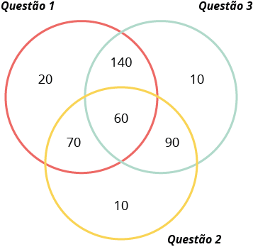
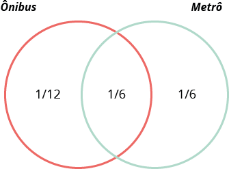

O DIAGRAMA DE VENN
O Diagrama de Venn tem esse nome em homenagem ao matemático John Venn que o criou no século XIX. Trata-se de uma ferramenta muito útil para representar relações entre conjuntos (união e interseção), bem como para resolver alguns problemas de probabilidade e estatística e até mesmo de lógica.
O diagrama utiliza círculos sobrepostos que permitem ilustrar as relações entre conjuntos. Veja a seguir.
Conjunto dos elementos que pertencem apenas a A.
As oito regiões distintas que definem o diagrama, conforme você viu anteriormente, podem ser combinadas de 256 (28) maneiras diferentes e formar outros conjuntos. Caso queira entender este cálculo, clique aqui. Abaixo, apresentamos alguns deles a título de explicação.
1. Conjunto de todos os elementos que pertencem a A. Observe que reunimos quatro regiões para obtê-lo.
Veja a seguir como utilizar o Diagrama de Venn para resolver problemas.
-
Problema 1 - A avaliação de Cálculo
- 60 alunos acertaram as três questões.
- 130 alunos acertaram a Questão 1 e a Questão 2.
- 200 alunos acertaram a Questão 1 e a Questão 3.
- 150 alunos acertaram a Questão 2 e a Questão 3.
- 290 alunos acertaram a Questão 1.
- 230 alunos acertaram a Questão 2.
- 300 alunos acertaram a Questão 3.
- 40 alunos não acertaram nenhuma questão.
Sobre uma avaliação de Cálculo que continha 3 questões, sabe-se que:
Pergunta: Quantos alunos fizeram a prova?
Solução:
Observe que os alunos que acertaram a Questão 1 somam 290 alunos, mas destes já sabemos que 60 acertaram as três questões, 140 acertaram as questões 1 e 3 e 70 acertaram as questões 1 e 2. Assim, fazendo: 290 - 60 - 140 - 70 = 20. Logo, 20 alunos acertaram apenas a Questão 1.
Pelo mesmo raciocínio, note: os alunos que acertaram a Questão 2 somam 230, destes 60 acertaram as três questões, 70 acertaram as questões 1 e 2 e 90 acertaram as questões 2 e 3. Assim, fazendo: 230 - 60 - 70 - 90 = 10. Logo, 10 alunos acertaram apenas a Questão 2.
Por sua vez, os alunos que acertaram a Questão 3 somam 300 alunos, mas destes sabemos que 60 acertaram as três questões, 140 acertaram as questões 1 e 3 e 90 acertaram as questões 2 e 3. Assim, fazendo: 300 - 60 - 140 - 90 = 10. Logo, 10 alunos acertaram apenas a Questão 2.
Fique atento que, 200 alunos acertaram as questões 1 e 3. Mas, destes 60 acertaram as três questões, logo, 200 - 60 = 140. Assim, 140 alunos acertaram apenas as questões 1 e 3.
130 alunos acertaram as questões 1 e 2, destes 60 acertaram as três questões. Logo, 130 - 60 = 70. Assim, 70 alunos acertaram apenas as questões 1 e 2.
150 alunos acertaram as questões 2 e 3, destes 60 acertaram as três questões. Logo, 150 - 60 = 90. Assim, 90 alunos acertaram apenas as questões 2 e 3.
Agora então podemos completar o diagrama.
Não acertaram nenhuma questão: 40
Fazendo a soma: 20 + 140 + 10 + 70 + 60 + 90 + 10 + 40 = 440. Concluímos então que 440 alunos fizeram a prova de Cálculo.
-
Problema 2 - O meio de transporte utilizado
- 1⁄6 dos alunos entrevistados utilizam ônibus e metrô.
- 1⁄4 dos alunos entrevistados utilizam ônibus.
- 1⁄3 dos alunos entrevistados utilizam metrô.
Numa escola, foi feita uma pesquisa sobre o meio de transporte utilizado pelos alunos para ir à escola. Dos 300 alunos que responderam a pesquisa, concluiu-se que:
Pergunta:Quantos alunos não utilizam nenhum dos transportes (ônibus ou metrô)?
Solução:
Sabemos que 1⁄4 dos alunos utilizam ônibus, mas destes 1⁄6 utilizam ônibus e metrô. Assim, fazendo: 1⁄4 - 1⁄6 = 2⁄24 = 1⁄12, obtemos que 1⁄12 dos entrevistados utilizam apenas ônibus.
1⁄3 dos alunos utilizam metrô, mas destes 1⁄6 utilizam ônibus e metrô. Assim, fazendo: 1⁄3 - 1⁄6 = 3⁄18 = 1⁄6, obtemos que 1⁄6 utilizam apenas metrô.
Utilizando a representação por meio do Diagrama de Venn, obtemos:
Não utilizam nenhum dos transportes (ônibus ou metrô).
Queremos descobrir a quantidade de alunos entrevistados que não utilizam nenhum dos transportes. Para tanto, vamos representar essa fração por x. Sabemos que:
1⁄12 + 1⁄6 + 1⁄6 + x = 1
x = 1 - 1⁄12 - 1⁄6 - 1⁄6 = 1 - 5⁄12 = 7⁄12
Assim, 7⁄12 dos 300 entrevistados não utilizam nem ônibus nem metrô. Como temos: 7⁄12 de 300 igual a 175, concluímos que esta é a quantidade de alunos entrevistados que não utilizam nenhum dos transportes.
As aplicações do Diagrama de Venn não se restringem aos casos com dois ou três conjuntos. Para problemas mais complexos, pode-se utilizar até mesmo 5 conjuntos. Veja abaixo uma forma de representar um Diagrama de Venn com 4 e 5 conjuntos, respectivamente.
Duas formas diferentes para representar o Diagrama de Venn com 4 conjuntos.
Diagrama de Venn com 5 conjuntos.
Localize no Diagrama de Venn:
Exemplo, você se encontra apenas no conjunto dos que estiveram na Terra, mas sem interseção com nenhum outro grupo - (a menos que você seja um astronauta!):
- A) Yuri Gagarin, cosmonauta russo, foi o primeiro homem a ir ao espaço.
- B) Neil Armstrong foi um dos primeiros homens a pisar em solo lunar.
- C) A Mars Pathfinder foi a primeira “rover” a pousar em Marte, em 1993.
- D) A sonda Voyager 1 foi a primeira construção humana a atingir o espaço exterior ao nosso sistema solar.
- E) Cometa Halley passou perto da Terra, pela última vez, em 1986.
Referência bibliográfica:
OBMEP. Diagrama de Venn: problemas de raciocínio lógico. Disponível em: http://clubes.obmep.org.br/blog/diagrama-de-venn-problemas-de-raciocinio-logico/. Acesso em: 18 dez. 2020.